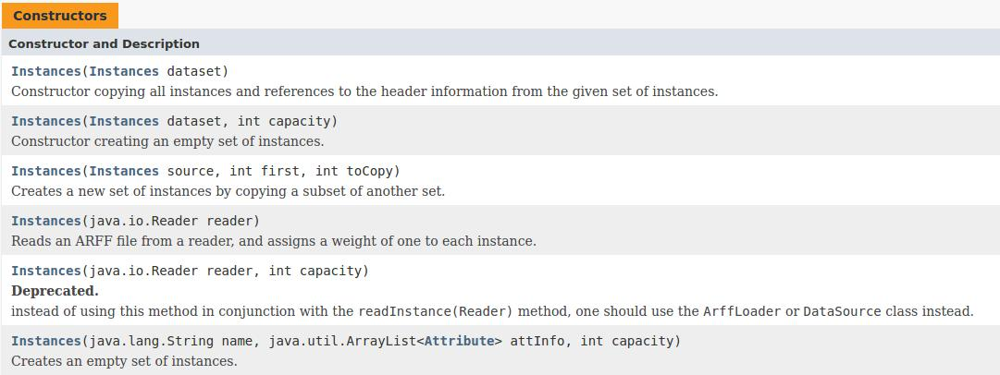

机器学习之Weka学习(02)-Instances类介绍
2016-06-2９ by subondInstances类介绍
Instances类是Weka中进行数据操作的对象，即需将所要处理的数据先存入并转化为Instances类的对象，然后进行其他操作。
public class Instances extends java.util.AbstractList<Instace> implemensts java.io.Serializable, RevisionHandler
也就是说Instances类是继承AbstractList类而来，并实现了Serializable,RevisionHandler接口。
构造函数
其构造函数可以实现实例的完整或部分拷贝，也可以创建新的实例，值得注意的是，其读入的数据格式为arff。关于arff的数据格式后续会有介绍。
主要成员变量
- numAttributes():返回属性总量
- setClassIndex(int):设置用于分类的属性
- instance(int):返回具体的实例
- firstInstance():返回第一个实例
应用实例
- 导入数据，设置分类属性，输出实例
import java.lang.String;
import weka.core.converters.ConverterUtils.DataSource;
DataSource source = new DataSource("filename");
Instances ins = source.getDataSet();
System.out.println(ins)
参考资料
官方资料：Instances类